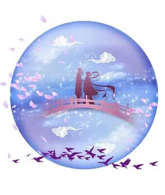
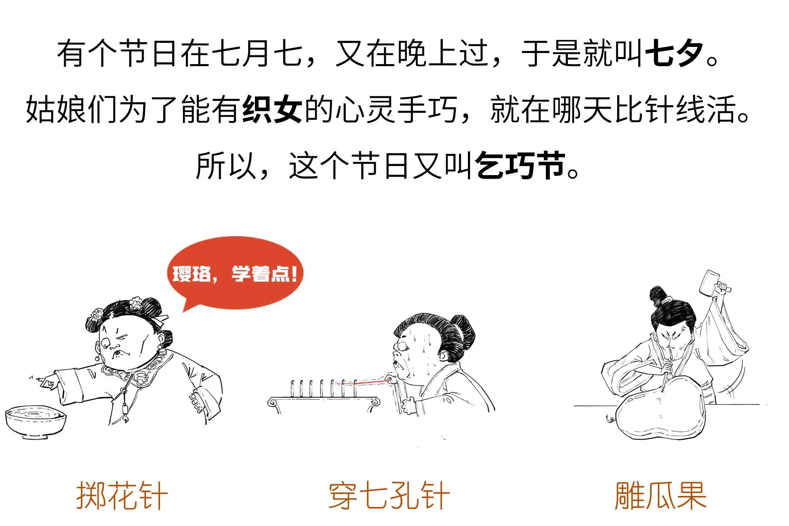
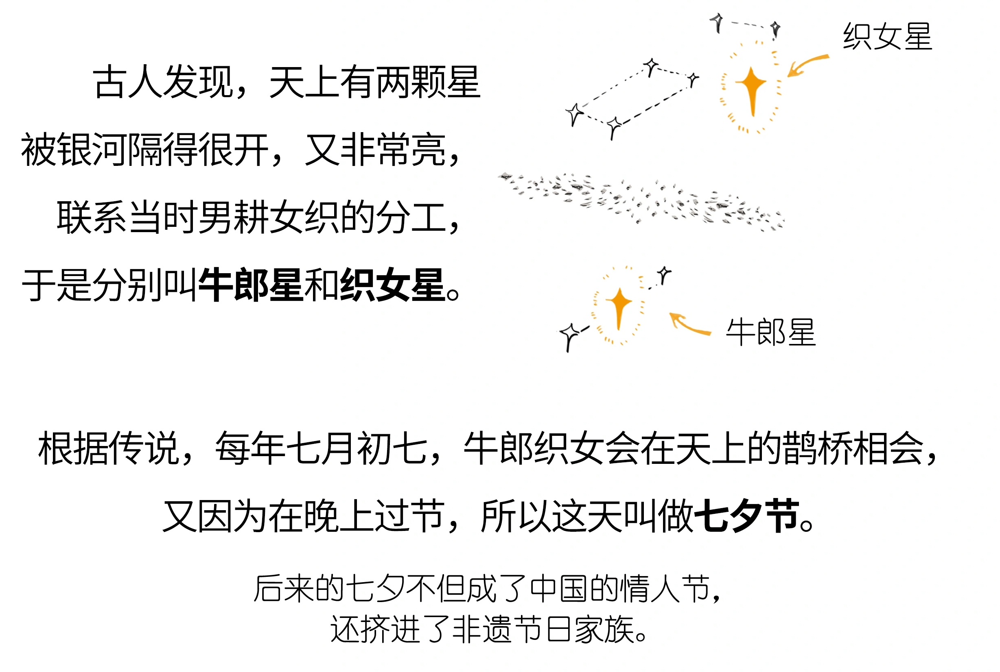
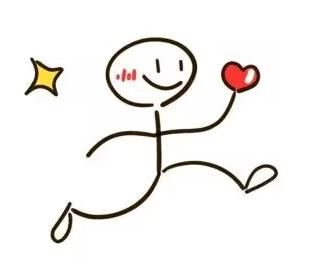
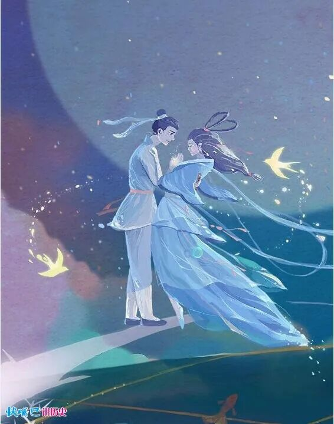

1、对月穿针
“对月穿针”，是指七月初七这天傍晚，家家户户都把庭院清扫干净，年轻妇女和姑娘们先要向织女星虔诚跪拜，乞求织女保佑自己心灵手巧。然后，她们把事先准备好的五彩丝线和七根银针拿出来，对月穿针，谁先把七根针穿完，就预示着将来她能成为巧手女。
2、投针验巧
投针验巧是七夕穿针乞巧风俗的变体，源于穿针，又不同于穿针，是明清两代盛行的七夕节俗。所谓投针验巧，即是先准备一只面盆，放在天井里，倒入“鸳鸯水”，即把白天取的水和夜间取的水混合在一起。但常常把河水、井水混在一起倒入面盆就算成了，面盆和水要露天过夜，再经第二天即七月初七白天太阳一晒，到中午或下午就可以“验巧”了。
3、拜魁星
北斗七星的第一颗星叫魁星，又称魁首。魁星，是中国古代神话中所说的主宰文章兴衰的神，在古代学子心目中，魁星具有至高无上的地位。俗传七月七日是魁星的生日，魁星文事，想求取功名的读书人特别崇敬魁星，所以在七夕这天拜祭，祈求他保佑自己考运亨通。古代士子中状元时称“大魁天下士”或“一举夺魁”，都是因为魁星主掌考运的缘故。闽东一带读书人崇敬魁星，于“七夕”更有“拜魁星”之俗。
4、喜蛛应巧
这也是较早的一种乞巧方式，其俗稍晚于穿针乞巧，大致起于南北朝之时。将蜘蛛装于盒内或用碗覆盖，并根据一定的标准来判断是否乞得巧来，如有以是否结网为标准的，若结网就得巧；有以所结网丝多寡为标准的，网结得越密表示乞到的巧越多。有以网结得是否有条理为标准的，有条理则谓得巧。
